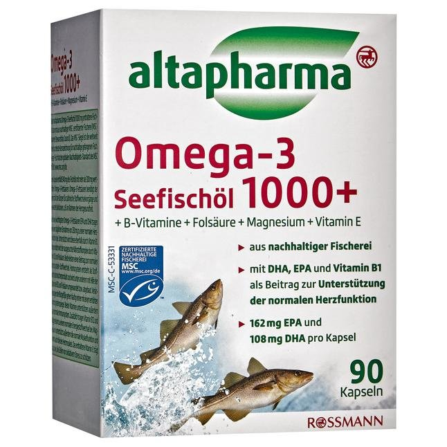

altapharma Seefischol Omega-3 1000 Морской Рыбий жир Омега-3 1000 с витаминами группы В 155,7 г
Краткое описание товара
Пищевая добавка с витаминами, магнием и полиненасыщенные омега-3 жирные кислоты
Подробное описание товара
Altapharma морской рыбий жир омега-3 в 1000 мг капсулы содержится 300 ценных омега-3 жирных кислот. Он участвует во многих метаболических процессах и функциях тканей. Это касается и сердечно-сосудистой системы. Поскольку организм не может сам производить их, они должны быть приняты с пищей. При ежедневном приеме 250 мг способствуют нормальной функции сердца. Выбранный комплекс способствует нормальному метаболизму гомоцистеина. Гомоцистеин производится в качестве промежуточного обмена веществ. Изменения в кровеносных сосудах часто связаны с повышенным уровнем гомоцистеина. Витамины также поддерживают иммунную систему. Магний способствует поддержанию функционала мышц и, таким образом, сердечную мышцу. Витамин Е помогает защитить клетки от окислительного стресса.
Особенности товара
- с витаминами группы В, фолиевой кислоте, магний, витамин Е
- DHA, EPA и витамин В1 поддерживает нормальную работу сердца
- только 1-2 капсулы в день
Характеристики товара
- Вес отправления: 200 г
- Бренд: altapharma
- Страна: Германия
Технические характеристики
| Состав на 1 порцию | ||||
| Название | мг | % дневной нормы | кКал | |
| Элементы | K | 10 | 100 | 1 |
| Mg | 5 | 50 | 2 | |
| Витамин C | 20 | 120 | 4 | |
| Витамин A | 20 | 100 | 4 | |